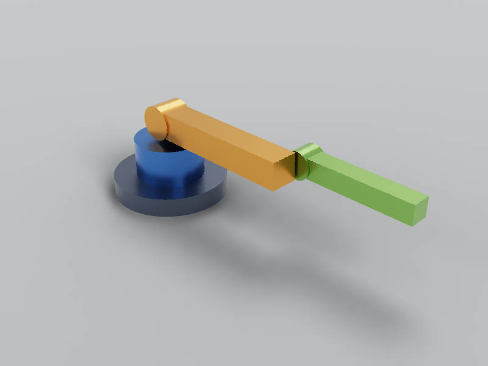

arm
A 2-link arm: a turntable on a base, an upper arm on a shoulder, a forearm on an elbow riding on it. Each joint moves everything after it. Run: cad run examples/arm.ts, then pose it in the viewer, `cad model ranges <id>` for the stops, or `cad model snapshot <id> reach.png --pose reach`.

Source
Run it with cad run examples/arm.ts.
// A 2-link arm: a turntable on a base, an upper arm on a shoulder, a forearm on an elbow riding
// on it. Each joint moves everything after it. Run: cad run examples/arm.ts, then pose it in the
// viewer, `cad model ranges <id>` for the stops, or `cad model snapshot <id> reach.png --pose reach`.
import { assembly, box, cylinder, model, revolute } from "@cad/sdk";
export const arm = model("arm", () => {
const base = cylinder(30, 10, { align: ["center", "center", "min"] }).label("base", { color: "#555b66", material: "steel" });
const turret = cylinder(18, 20, { align: ["center", "center", "min"] }).translate(0, 0, 10).label("turret", { color: "#4a6fa5", material: "aluminum" });
// Built straight out along +X at shoulder height (z = 40).
const upper = box(80, 14, 14, { align: ["min", "center", "center"] })
.fuse(cylinder(9, 16).rotateX(90))
.translate(0, 0, 40)
.label("upper", { color: "#c98b4a", material: "aluminum" });
const fore = box(60, 10, 10, { align: ["min", "center", "center"] })
.fuse(cylinder(7, 12).rotateX(90))
.translate(80, 14, 40) // beside the upper arm, clear of it
.label("forearm", { color: "#7aa35a", material: "aluminum" });
return assembly("arm", [base, turret, upper, fore], {
joints: [
// effort (N·mm) and velocity (deg/s) are the actuators': a robot description writes them
revolute("yaw", { parent: base, child: turret, axis: "Z", limits: [-170, 170], effort: 5000, velocity: 180 }),
// Limits from `cad model ranges`: the upper arm meets the turret at +8 (written rounded in).
revolute("shoulder", { parent: turret, child: upper, axis: { origin: [0, 0, 40], dir: "Y" }, limits: [-90, 5], effort: 4000, velocity: 120 }),
revolute("elbow", { parent: upper, child: fore, axis: { origin: [80, 0, 40], dir: "Y" }, limits: [-140, 140], effort: 2000, velocity: 180 }),
],
poses: {
home: {},
reach: { yaw: 30, shoulder: -30, elbow: 45 },
folded: { shoulder: -80, elbow: 130 },
},
});
});
if (import.meta.main) await arm();